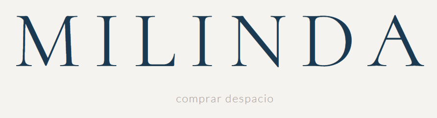

by MQ
Artesanía textil hecha a mano
Hecho a mano, sin prisa,
con mirada actual.
Piezas textiles contemporáneas, hechas una a una, con tiempo y cuidado.
Contacto: milagrosquinteiro@milinda.com

Una a una
sin producir en serie
Con cuidado
materiales elegidos
Ritmo humano
tiempos claros
Sin presión
si no encaja, está bien